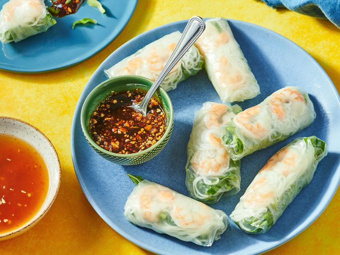

Vietnamese Fresh Spring Rolls

These fresh Vietnamese spring rolls are a refreshing change from the usual fried variety and have become a family favorite. They are a lovely, light appetizer and delicious dipped in one or both of the sauces included in this recipe. Great for parties as you can prep them ahead of time.
Ingredients for Spring Rolls
- 2 ounces rice vermicelli noodles
- 8 rice wrappers (8.5 inch diameter)
- 8 large cooked shrimp, peeled, deveined, and cut in half
- 2 leaves lettuce, chopped
- 3 tablespoons chopped fresh mint leaves
- 3 tablespoons chopped fresh cilantro
- 1 ⅓ tablespoons chopped fresh Thai basil
Ingredients for Sauces
- ¼ cup water
- 2 tablespoons fresh lime juice
- 2 tablespoons white sugar
- 4 teaspoons fish sauce
- 1 clove garlic, minced
- ½ teaspoon chili garlic sauce
- 3 tablespoons hoisin sauce
- 1 teaspoon finely chopped peanuts
Steps
- Gather all ingredients.
- Fill a large pot with lightly salted water and bring to a rolling boil; stir in noodles and return to a boil. Cook noodles uncovered, stirring occasionally, until tender yet firm to the bite, 3 to 5 minutes; drain and set aside to cool.
- Fill a large bowl with warm water. Dip one wrapper into the hot water for 1 second to soften.
- Lay wrapper flat; place 2 shrimp halves, some cooled noodles, lettuce, mint, cilantro, and basil in a line across middle of wrapper, leaving about 2 inches uncovered on each side.
- Fold opposing uncovered sides of wrapper inward, then tightly roll 1 of the opposing edges of the wrapper around the filling. Repeat with remaining ingredients.
- Combine water, lime juice, sugar, fish sauce, garlic, and chili sauce in a small bowl; set aside.
- Combine hoisin sauce and peanuts in a separate small bowl; set aside.
- Serve spring rolls with both sauces for dipping.
Back to recepies